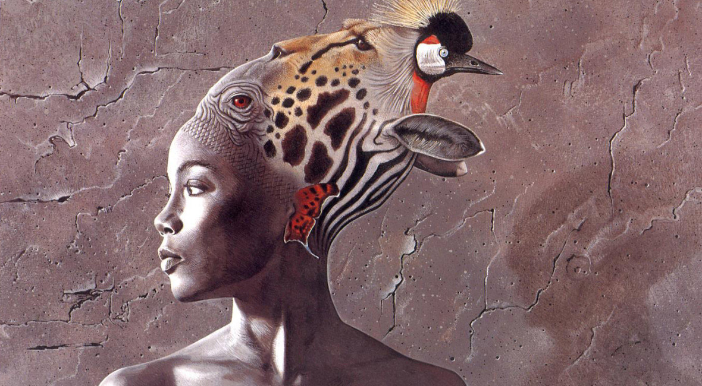
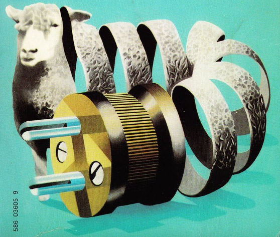
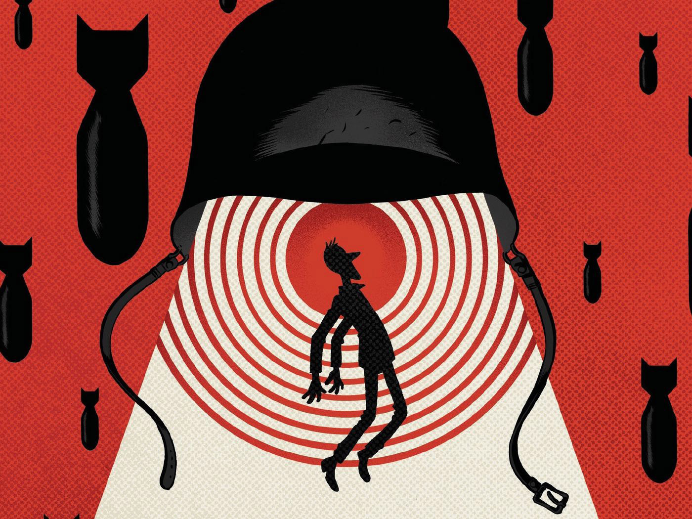
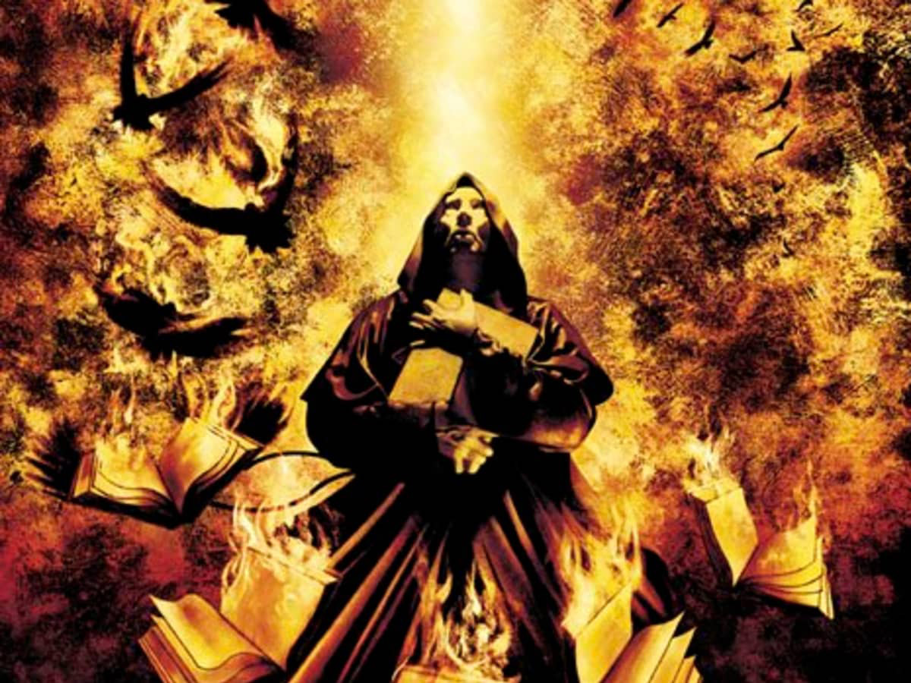
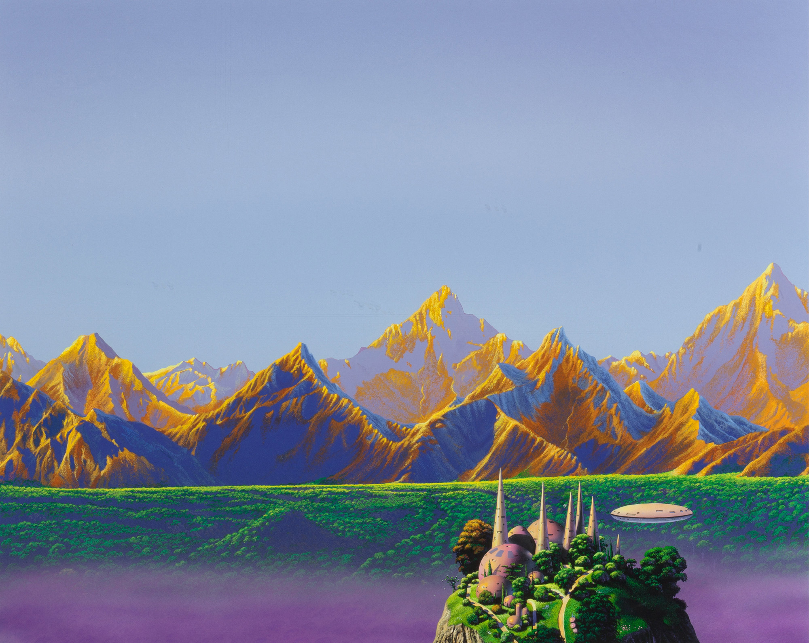

Wild Seed
- Author:
- Octavia Butler
- Published:
Plot
This is a story about two immmortal Africans, Doro and Anyanwu, with supernatural powers. Doro steals and inhabits bodies, while Anyanwu is able to shapeshift and understands her own body cell by cell. Doro is obsessed with breeding supernatural humans, and coerces Anyanwu into his service and ferries her to his colonies in America.
Analysis
Feminism must be intersectional, and incorperate critiques of other forms of oppression. Wild Seed is a wonderful demonstration of considering the intersections of racism, ableism, sexism, and heteronormatity and how they work in tandem. Most apparently, it is a strong critique of how colonialism vied to control black women’s bodies.
Anyanwu represents a strong counter to the social norm, even by today’s standards just by just existing. She’s a queer woman of colour (who occasionally cross dresses) who has complete control over her own body.
Do Androids Dream of Electric Sheep?
- Author:
- Philip K. Dick
- Published:
Plot
In the aftermath of a world war in 1992, Earth’s atmosphere is polluted and almost all animal life has been extinguished. The Rosen Association manufactures androids near identical to humans and offers them up as slave labour to incentivise UN citizens to colonize Mars. Eventually, some of the androids revolt and flee to Earth, and are hunted there by American and Soviet police. Androids continue to flee to Earth and hide from police bounty hunters. Rick Deckard is one of these bounty hunters and he is tasked with retiring
(finding and killing) 6 recently escaped androids.
Analysis
A major theme of this novel is empathy. Owning and caring for real animals has become such a status symbol that robotic look-alikes (also made by Rosen) are popular amongst the poor. It is Rick’s own motivation as a bounty hunter to be able to afford a real animal to comfort his depressed wife, Iran. Mercerism is a new religion based on a machine box which connects users to the painful experiences of Wilbur Mercer, who is constantly walking uphill in a desert while being pelted with stones. The box is believed to foster empathy.
The theme of empathy is thick with irony — Rick is killing androids out of an inability to feel empathy for their plight, in exchange for a symbol (a living animal) that communicates a socially acceptable form of empathy. Rick is often confronted with the fact that it is almost impossible to distinguish androids from humans, and questions the validity of the tests Rosen have created to test whether someone is an android or human.
Slaughterhouse-Five
- Author:
- Kurt Vonnegut
- Published:
Plot
Also known as The Children’s Crusade, Slaughter-house Five is an anti-war novel set during World War II, and some of the years following it. It is based on the author’s (Kurt Vonnegut) own experiences as a serviceman during the war, specifically as a survivor of Dresden’s firebombing. Billy Pilgrim is the protagonist of the story, though Kurt writes himself in as its unreliable narrator. The story is told in a non-linear fashion, with events before, during, and after the war happening out of sequence. Billy is, reluctantly, an American soldier, and he and his squad are captured by German soldiers and brought to Dresden. Billy witnesses the horrors of war, culminating in the shooting of his closest friend and the Dresden bombing. After returning home and marrying, Billy is kidnapped and trapped in a zoo by aliens and learns their deterministic philosophy.
Analysis
Kurt writes in a style that combines humour and horror to deliver devastating plots. So it goes
, a phrase adopted by Billy from the aliens that Kurt also uses when narrating appears whenever a character dies. It’s funny to see death so nonchalantly acknowledged, and so consistently. And yet it only makes sense that a story about war can only grow numb and casual to death. As if being plucked from the Earth, Billy’s become detached from the overwhelming tragedy.
Along these lines, Slaughterhouse-Five is arguably a discussion about PTSD before the term was coined. Billy is “unstuck in time,” his past interrupts the present, and he remembers events out of order. In one of its most depressing passages, Billy sees the Dresden bombing in reverse: the bombs return to their ships, which then fly back to be disassembled; the war never starts, and no one dies. Billy adopts a deterministic outlook from the aliens, a symbol for his trauma, as a means to cope with this.
A Canticle for Leibowitz
- Author:
- Walter M. Miller Jr.
- Published:
Plot
In the aftermath of a nuclear war known as the Flame Deluge, what is left of humanity band together and fervently destroy scientists, their research, and eventually, everything related to academics. Some research and textbooks did survive in secret however, hidden in monasteries and protected by monks. The story centers on the history of one of these monasteries, the Albertian Order of Leibowitz. A Canticle for Leibowitz is split into three parts, starting with an early period of the monastic order in which none of the monks understand the scientific literature they are preserving, but are nonetheless dedicating their lives to its upkeep. In the book’s second part, the order has gained some understanding of its literature and has even recreated a human-powered generator and a lightbulb. In its final part, the world has rediscovered nuclear technology and flown to worlds beyond the sun. However, nuclear war breaks out once again, and the cycle begins anew.
Analysis
A Canticle for Leibowitz presents us with an interesting take on the genre — I certainly didn’t expect to find scifi from the 50s to be set in a future that looks like the past, let alone be so closely associated with Christianity. It is interesting in a contemporary context where, in explicitly political spaces, Christian values are so often pitted against scientific findings.
It is also interesting to see this association because oftentimes, science is seen as apolitical or lacking in ideology. This is inherently untrue, as practicing science always requires asking questions. What kinds of questions are asked depend on what a scientist believes is interesting, or important, or what they think will get them a grant, etc. Research depends on institutions to be funded, and funding comes from others who also believe that the questions being asked need to be answered. A Canticle for Leibowitz brings the political implications of science into sharp focus, reminding us that in the past, science, was also branch of religion.
Foundation and Earth
- Author:
- Isaac Asimov
- Published:
Plot
Foundation and Earth is the fifth and final volume of the Foundation series, and it directly continues from the plot of the previous book, Foundation’s Edge. It features the same main 3 characters, Trevize, Janov, and Bliss, who are together searching for Earth, the planet from which humanity originated. Earth has all but almost been forgotten as humanity has long since populated the galaxy, and no one knows why humanity left it. Most are not even sure Earth is where humanity was born.
Analysis
Foundation and Earth has problems in its presentation of gender and sex, but makes some interesting choices, nonetheless. But I’ll start with my biggest gripe first. Bliss, a human from and of the planet Gaia shares a conscious with everything existing in that planet. This brings questions of identity to mind; however, Asimov does not take this line of questioning very far and falls especially short when it concerns gender. Bliss is emblematic of several stereotypes directed at feminine bodies. She’s characterized as being emotional and incapable of making more rational
decisions when protecting a child. She automatically assumes the role of caretaker and has the supernatural power to emotionally manipulate others. She’s also prone to fainting when her power is drained.
However, there is a more interesting character introduced later that does engage with concepts of gender and sex (albeit clumsily). The protagonists investigate a planet named Solaris, where they find Solarians, former humans who’ve modified their bodies and become hermaphrodites capable of self-fertilization. They find Fallom there, a Solarian child who’s been slated to execution, and take them into their ship. Trevize immediately dislikes Fallom for not conforming to one gender expression and for being hermaphroditic (he also conflates sex and gender while making these arguments). An interesting question about language arises, Fallom doesn’t know human languages, and while being taught Trevize and Janov’s common tongue, learns that they don’t have a pronoun which accurately describes them. Unfortunately, the conversation pivots to just gendering Fallom as she without interrogating this further, such as asking if a new pronoun could be made for them. At least Trevize grows as a character somewhat and stops insisting that Fallom have surgery to alter their genitals.